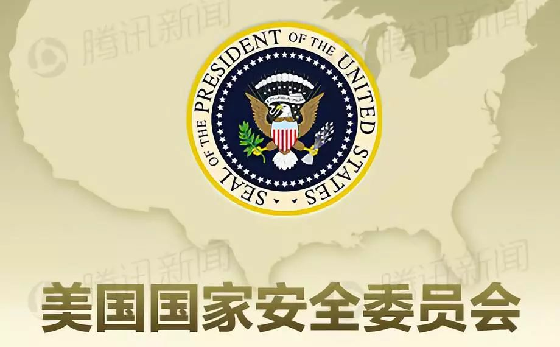

收录于合集

简 介
【作者】 李枏，中国社会科学院美国研究所副研究员;
【文章来源】 《美国研究》2018年第6期，127-141页。
摘要
国家安全委员会是美国对外决策的核心机构。随着美国成为超级大国, 国家安全委员会逐渐成为美国对外决策过程中的一个法定机构。总统在国家安全委员会中居于核心角色, 也是对外政策的最后决策者。同时, 国家安全委员会最大限度地整合了政治、经济、军事, 以及外交力量, 同时避免了各行政部门由于片面追求部门利益而造成的相互倾轧, 保证了总统对外决策进程的控制。然而, 在实际政策操作上, 这种正式的决策程序需要与大量非正式决策程序及个人关系的交互作用, 从而最终形成以总统为核心的决策体系。
【关键词】 美国军事与外交、国家安全委员会、总统、国家安全事务助理、对外决策
内容提要

决策总是充满各种政治张力, 保持着特有的动态性。其中最重要的是, 决策会因受到某些因素的影响而改变方向。这在美国对外决策过程中体现得尤为明显。一方面, 美国总统必须将决策过程集中在白宫, 保持自己的管理风格;另一方面, 总统的“小圈子”政治, 以及他与其顾问之间的个人关系也是决策的关键。正如前白宫幕僚泰德·索伦森 (Ted Sorenson) 所认为的那样, “每个总统都会按照自己感到最为舒服, 或自认为最有效的方式构建决策体系。”
美国的国家安全委员会 (The National Security Council) 是美国对外决策的核心机构, 其设立与演变鲜明地体现出总统的世界观与管理风格。为了避免各行政部门由于片面追求部门利益而造成的相互倾轧, 总统必须最大限度地将各部门进行整合, 实现各部门的相互妥协与配合, 从而保证总统对对外决策进程的控制。国家安全委员会由此应运而生, 其发展并不是一个僵化的直线性演进, 而是一种灵活和富于动态的过程。虽然来自于国际政治体系、国内政治制度、行政部门利益的压力基本相同, 但每位总统的任期长短、出身背景、管理方式, 以及领导风格各异, 因此国家安全委员会所呈现的组织形态和决策过程也是不尽相同的。
值得关注的是, 自老布什执政到目前的特朗普政府, 美国国家安全委员会的基本组织形态并没有发生大的改变, 国家安全决策的正式流程愈来愈趋向稳定 , 而总统决策的非正式性决策程序和与顾问之间的个人关系反而被凸显出来, 成为其中不确定的因素。本文主要将国家安全委员会这一决策体制从历史的角度做综合考量, 将政治环境、决策体制, 以及个人关系作为主要研究对象, 对其决策程序的正式性和非正式性进行探究。
中国学者对美国的国家安全委员会体制已有一些研究, 如刘建华的《美国国家安全体制改革:历程、动力与特征》一文从美国安全委员会决策体制变迁的视角出发, 认为美国国家安全体制改革呈现出既制度化又不失灵活性的特征。孙成昊从历史的角度探讨了美国国家安全委员会的演变模式, 认为总统个人的行事作风、管理风格, 以及对国安会的重视程度决定了其作用的大小, 而国家安全事务助理与总统的关系则在一定程度上决定了国安会模式的成功与否。夏立平的《美国国家安全委员会在美对外和对华政策中的作用》, 陈长伟和牛大勇的《冷战僵持年代的美国对话决策机制:以约翰逊政府为中心的探讨》等文章研究了国家安全委员会决策机制中的案例, 对危机管理及国家安全事务助理在具体决策中的作用进行了探讨。上述文章都是以国家安全委员会的体制架构为研究对象, 对其正式的决策流程进行探究, 虽然有涉及非正式决策研究, 但论述并不深入。美国学者威廉·纽曼 (William W. Newmann) 在其著作《管理国家安全政策:总统与其程序》一书中将美国国家安全决策机制划分为正式、非正式与个人关系三种架构, 然而该书更多偏重对非正式程序因素的关注, 而忽视了正式决策程序在决策体制中的基础地位。实际上, 在老布什执政之后的国家安全委员会体制中, 正式决策程序一直为历届总统所继承, 显示了其至关重要的作用。
本文以国家安全委员会成立以来的决策程序为研究对象, 在历届总统所建立的正式程序基础上, 探究其中大量的非正式程序及个人因素, 旨在将美国国家安全决策体制中正式、非正式, 以及个人因素结合所产生的综合性决策风格予以探讨。
一、国家安全委员会的设立与演变
**
**
美国国家安全委员会的设立最初是效仿1904年由英国所设置的帝国防务委员会 (The Imperial Defense Council) , 这个委员会的主要目的是在战时整合英国的政治和军事力量。1919年, 美国政府成立了“国务院-海军部联席中立委员会 (The Joint State-Navy Neutrality Board) ”, 虽然这个机构当时不被重视, 但实际上却成为国家安全委员会的前身。1945年9月, 海军部长詹姆斯·佛瑞斯塔 (James Forrestal) 委托其友人斐迪南·爱伯施塔特 (Ferdinand Eberstadt) 撰写报告, 建议成立国家安全委员会, 同时成立中央情报局 (The Central Intelligence Agency) 作为国家安全委员会的附属机构。杜鲁门总统最终接受了佛瑞斯塔报告中的部分建议。1947年7月26日, 国会最终通过《国家安全法》 (The National Security Act) , 经杜鲁门总统签署生效。该法确认成立国家安全委员会。该法第101条款明确指出, 国家安全委员会的任务是“在有关国内外安全和军事政策上, 综合行政部门的意见, 向总统建言, 以期在安全事务上最有效地实现部门合作。”其成员包括“总统、国务卿、国防部长, 其他行政、军事部门的部长和副部长。委员会设立一名由总统任命的文官执行秘书。”1947年9月26日, 国家安全委员会召开了第一次会议。在杜鲁门看来, 国家安全委员会必须体现总统的意志。从此, 国家安全委员会就正式成为服务总统的机构。在1947年至1950年间, 他只参加了57次国家安全委员会会议中的12次。
1953年1月, 艾森豪威尔入主白宫, 他非常强调决策过程的正规化与组织化。在艾森豪威尔执政期间, 国家安全委员会被设定为对外决策的主要机构。各级行政部门就相关问题起草并提出政策建议方案, 然后提交国家安全委员会的计划委员会 (The Planning Board) , 计划委员会对这些政策方案进行修改、扩充或再创作, 整合部门之间的分歧, 最后交由国家安全委员会全体会议讨论;总统通过国家安全委员会会议从各部门的方案中选择最佳方案。在艾森豪威尔任期内, 共召开过366次国家安全委员会会议, 他本人主持了近90%的会议。在会上, 他要求与会者畅所欲言, 甚至自己也参与讨论过程。艾森豪威尔非常重视责权划分, 以及决策流程的制度化。他曾坦言:“这种组织机构也许无法塑造一个成功的领导者, 但它却可以有效地使决策失误降到最低程度, 并使我们能在右手做事的同时还知道左手在做什么。”可见, 艾森豪威尔总统时期的国家安全委员会鲜明地反映出他的军事化风格, 然而这种决策方式却日渐僵化, 缺乏应有的灵活性。尤其在冷战初期, 美国在应对来自苏联的“挑战”时一直处于被动反应状态。
肯尼迪执政时期, 吸取了前任国家安全委员会体制的弊端, 把决策圈最小化, 有关重要政策的“会议经常仅在国防部长、国家安全事务助理、中央情报局局长和副总统中举行。”肯尼迪执政期间, 非正式的决策过程比比皆是, 国家安全委员会的正式决策权重大大下降。一方面, 肯尼迪非常重视跨部门的协调能力, 他特别成立一些临时性的专门小组 (task force) , 以协调部门间的行动, 如柏林小组、古巴小组、老挝小组等, 尤其建立战情室 (The Situation Room) , 电话直通国务院、国防部、中情局驻海外的机构。战情室的建立使得总统和其高级顾问能够更直接、更迅速地掌握国际形势。而另一方面, 肯尼迪时期的国家安全委员会开始突出总统与顾问之间的个人关系。肯尼迪非常依赖国家安全事务助理麦克乔治·邦迪 (McGeorge Bundy) , 从而使国家安全事务助理开始发挥决策过程的主要作用。在肯尼迪时期, 国家安全事务助理成为国家安全委员会会议的主要参与者、策划者, 以及政策实施的监督者。不仅如此, 国家安全事务助理还担任政府政策的发言人, 向公众解释总统的政策方案。约翰逊政府时期国家安全委员会并没有很大改动, 只是更重视非正式的决策模式。约翰逊更为倚重国务卿腊斯克 (David Dean Rusk) 和国防部长麦克纳马拉 (Robert S. McNamara) 。由国务卿、国防部长和国家安全事务助理所组成的星期二午餐会 (Tuesday Lunch Group) 成为“一种新的非常规形式的国家安全委员会决策方式”。
尼克松也非常重视个人关系, 上任伊始就任命亨利·基辛格出任国家安全事务助理一职。基辛格总结了以往总统决策过程的经验教训后指出, “灵活但无章法是肯尼迪和约翰逊决策的特点, 而正规却又僵化是艾森豪威尔的特点。我们的任务是结合这两种决策体系的最佳之处:既保持国家安全委员会处理安全和外交事务的规范化和效率, 又开辟总统与高级顾问之间沟通的渠道, 使得所有相关建议都能得到尊重和聆听。”在基辛格的规划中, 国家安全委员会不再是各部门协调意见的中心, 而是独立于行政部门之外的决策核心机构。基辛格在国家安全委员会下成立多个下属机构, 如高级评估小组 (Senior Review Group) , 负责六个跨部门小组 (Inter-departmental Groups) (政治军事组、中东组、东亚组、拉丁美洲组、非洲组、欧洲组) 所拟定的政策报告。由此, 外交事务几乎全被转移到了国家安全委员会, 直接由基辛格向总统汇报, 并做出最后决定。在尼克松时期, 国家安全委员会决策流程是由基辛格归纳出几个重要问题, 由中央情报局局长做情报简介, 最后以尼克松的讲话结束会议。然后分发《国家安全决策备忘录》, 告知最终决定, 并要求各行政机构贯彻执行。此外, 基辛格还进行了一系列秘密外交, 如秘密访问中国, 这使其可以超越官僚的常规模式, 保持政策的灵活性。
福特总统任期内, 国家安全委员会没有发生变化。卡特总统时期, 个人关系再次被置于突出地位, 从而导致国家安全事务助理布热津斯基和国务卿万斯 (Cyrus Roberts Vance) 之间的权力斗争一直没有间断过。布热津斯基把国家安全委员会众多的附属组织精简为两个委员会。一个是政策评估委员会 (The Policy Review Committee) , 由多个部门的长官负责长期政策的研究和分析, 该委员会由国务卿、国防部长和财政部长轮流担任主席;另一个是特别协调委员会 (The Special Coordination Committee) , 由国家安全事务助理布热津斯基担任主席, 负责与情报有关的秘密活动、武器控制和危机处理。在卡特总统时期, 国家安全委员会不经常召开会议, 除非遇到重大的决策或危机。
里根政府初期, 国家安全委员会地位急剧下降, 里根将更多原先属于国家安全委员会的权力下放到了行政部门之中。他认为外交政策应属国务卿掌握。里根非常重视部门之间的协调, 其国家安全委员会共有25个下属小组, 分别属于高级部门协作小组 (Senior Interagency Groups) 和普通部门协作小组 (Interagency Groups) 。高级部门协作小组就外交政策、国防政策、国际经济政策等情报进行分类, 分别由国务卿、国防部长、财政部长和中央情报局局长主持, 其功能相当于卡特时代的政策审查委员会。普通部门小组则由助理部长级人员主持。此外, 里根总统通过颁布第159号《国家安全决定指令》 (The National Security Decision Directive) , 使国家安全委员会的决策更加系统化, 该文件要求对秘密行动进行监督和审查。
从以上可以看出, 尽管国家安全委员会在历任总统任期的权重起起伏伏, 但其体制一直处于不断完善的过程中。 **首先 , 决策过程不断完善, 责权分工不断明细, 体现出决策的科学化。尤其是强化各部门之间的协调, 分地区、分功能成立各种小组, 保证行政部门之间, 以及小组间保持协调;其次, 总统经常按照非正式程序进行决策, 从而保持决策的灵活性与快速反应性, 决策者在相互熟悉的状态下实现决策的效率化;最后, 个人关系在决策过程中的作用越来越突出。**保持良好的个人关系是总统掌控权力的重要一环。每个总统都按照他的理念对不同部门领导加以倚重, 而国家安全事务助理的地位越来越重要, 从而成为决策的核心人物。自此, 国家安全委员会成为一种既机制化又且保持不断调整的对外决策体制。
二、“斯考克罗夫特”模式
**
**
老布什政府时期 , 国家安全事务助理布伦特·斯考克罗夫特 (Brent Scowcroft) 负责改革国家安全委员会。斯考克罗夫特构筑起一个 等级严格 的委员会体制, 最上层是部门首长委员会 (The NSC Principals Committee) , 此委员会于是成为国家安全事务助理、各部部长考虑和研究政策的机制。它 主要为总统提供建议 , 这样可以通过机制化减少总统因个人关系造成偏听偏信的负面影响。通过部门首长委员会, 总统的意志可以传达给各部门首长。部门首长委员会之下是 国家安全委员会部门副首长委员会 (The NSC Deputies Committee) , 它 负责向部门首长委员会提交政策方案 , 并对部门间的合作项目进行评估。部门副首长委员会顾问对国家安全委员会成员负责, 从而确保政策的制定掌握在国家安全委员会部门首长委员会的手中。部门副首长委员会之下是 政策协调委员会 (Policy Coordinating Committees) , 其负责人由国务卿选派的助理国务卿担任, 主要负责跨部门的政策研讨和实施 。政策协调委员会又下设六个 区域委员会 :分别为欧亚、西半球、东亚、南亚、近东与北非, 以及撒哈拉以南非洲。这些委员会之下还设有11个 负责特定事务的委员会 , 如人权与国际发展委员会、军控委员会、反恐委员会等。每个委员会的负责人就各自地区内的问题对上级委员会负责。斯考克罗夫特认为, 国家安全委员会必须无条件地为总统服务, 贯彻总统的意志, 同时避免令出多门。
由上可见, 老布什政府时期的国家安全委员会的管理模式是等级式的, 这种组织结构可以在一定程度上贯彻总统的意志, 确保总统的最高权力。由于老布什总统认为决策体系中的人际关系最为重要, 他选择的政府部长和国家安全事务助理都是既富有经验, 也彼此之间关系融洽的人士。良好的组织结构加上一位经验丰富、谨慎周密、富有效率的国家安全事务助理的领导, 老布什时期的国家安全委员会被称为“战后最融洽、磨合得最好的国家安全班子”。
到克林顿政府时期, 国家安全委员会仍然保持着“斯考克罗夫特模式”, 由包括内阁成员在内的决策者组成的部门首长委员会负责研究方案并提出建议;由各部门副首长和副国家安全事务助理组成的部门副首长委员会负责执行总统指令;由国家安全事务助理安东尼·莱克 (Anthony Lake) 及其属下负责各个部门协作工作组, 准备各种预备性研究工作。同时, 克林顿政府时期还新设立了一个国家经济委员会 (The National Economic Council, 简称NEC) , 其主要职责是负责制定美国的经济战略, 处理国内外所有与美国经济有关的问题。
2000年, 小布什入主白宫。“斯考克罗夫特模式”已经日趋成熟。在此组织结构之上, 小布什认真挑选了进入国家安全委员会的成员。在小布什政府时期, 每周四上午, 美国国家安全委员会在白宫的内阁会议室 (Cabinet Room) 召开例会。在会上, 委员会成员审查有关国家安全事务的重要问题, 综合各个部门提交上来的简报和意见。国务卿和其他相关政策的官员就此提出解决方案, 国防部长和参谋长联席会议也要对美国近期的军事行动进行通报和评估, 这些信息最终被汇总起来, 由总统做出最后的决策。
奥巴马入主白宫后, 继续沿袭“斯考克罗夫特模式”。奥巴马政府国家安全委员会的决策过程是由各级部门领导从下一级委员会选择备选方案, 然后把经专家讨论之后形成的方案呈报上级领导, 供总统在各种方案中做出选择。同时, 各级部门的助理部长级官员, 如地区助理国务卿的方案也可通过相应的委员会送交到总统那里, 使总统能够得到一些可能更有创见的建议。这种组织结构可以在一定程度上贯彻总统的意志, 确保总统的最高权力。为了适应新的挑战, 奥巴马政府国家安全委员会也首次将商务部长、美国贸易代表纳入国家安全委员会。
2017年1月, 特朗普成为新一届美国总统。他仍然全部保留了这一模式, 只是调整了三个委员会的人员构成。特朗普执政初期, 一度宣布国家情报总监、参谋长联席会议主席不再是国安会会议的常设成员, 只是当“会议与其职责相关时”被邀参会。随后迫于压力, 又不得不做出声明, 指其可以随时列席会议。特朗普不断在其中设立新职位, 并安置了自己的亲信, 使“斯考克罗夫特模式”机制化的效用荡然无存, 从而将这一模式的缺陷暴露无遗。
综上所述, 可以看出, “ 斯考克罗夫特模式”形成了正式、“小圈子”, 以及个人关系三个相互交错的决策圈, 最终由国家安全事务助理来进行协调。 **这种管理模式意在克服政出多门、低效、反应迟缓的弊端 , 试图采取决策集中化与首长负责制相结合的方式, 以形成高效和灵活的决策, 优势是保证外交政策制定的效率和规范。**前国务卿科林·鲍威尔曾指出, 国家安全委员会部门首长委员会的最重要目标是封杀“疯狂的想法”。另外这种管理模式可以保证总统的最终决策权, 并可贯彻总统的意志。“顾问班子中有不同性格、不同类型的人, 既有极端的保守主义者, 又有温和的保守主义者;既有单边主义的鼓吹者, 也有主张选择多边主义的人。 (小)布什总统在最后的决策之前需要权衡, 力求政策的完整性和准确性, 较为顺利地推行其既定方针。”良好的个人关系是“斯考克罗夫特模式”得以成功运转的重要因素, 它可以确保在突发或重大事件中, 超越“法定的”一些非正式决策立刻出台。
然而, 这种看上去似乎有效的组织结构, 实际上却有其重大的缺陷, 也就是 总统权力过大 , 从而导致其决策的任意性、盲目性。从 决策的角度讲 , 这个体系的有效运作必须有一个前提, 那就是身处中心的总统必须是一位精明的管理者, 他不仅具有丰富的外交经验, 而且必须具备敏锐的鉴别力来平衡不同意见并做出最后的选择。以小布什为例, 在其第一任期, 国务院与副总统办公室、国防部之间长期存在意见分歧, 拉姆斯菲尔德与切尼形成联盟, 垄断信息, 通过国家安全委员会排挤国务院和国务卿鲍威尔, 而布什并没有在其中扮演积极的平衡角色, 反而造成了颇为严重的分权化趋势。更为严重的是, 在决策的最后阶段, 小布什完全不重视反对声音, 从而导致政策的偏颇。拉姆斯菲尔德在其回忆录中对小布什的领导作风评论道, “布什总统并不善于听取别人的意见, 在做出决定之前他不会进行全面的考虑, 之后也不对政策实施进行有效的跟踪。”这也表现在特朗普政府中, 国家安全委员会的组织结构根本起不到阻止非理性决策的作用。特朗普任人唯亲, 授权女婿贾里德·库什纳 (Jared Kushner) 与外国政府沟通, 随意裁撤阁员、不顾流程任意决策。这些都暴露了这一模式的弊端, 或将引起决策出现重大失误。
三、国家安全委员会体制中三种决策程序及评估
**
**
任何一位总统任内都会按照三种决策程序设立国家安全委员会 , 以及进行政策制定, 这三种决策过程序的最终定型与彼此的联系全由总统的领导风格而定。
**第一种程序是在总统上任初期建立的国家安全委员会的正式程序 , 如部门首长委员会、副首长委员会, 以及政策协调委员会。**总统会在这一架构中决定管理决策的具体流程, 决定政策的内容, 以及将哪些参与者排除在外, 甚至会缩减参与的人数。比如小布什政府执政之初发布的总统令对政策协调委员会的功能进行了细化, 具体规定了负责人应具备的相关职能。而奥巴马对跨部门政策委员会并未做详细的职能安排, 只规定了这一委员会由国安会有关成员主持工作, 在必要时也可由国家经济委员会的相关成员负责。对奥巴马而言, 这种调整会提高这一部门的工作效率, 有利于总统掌控整个国家安全委员会。不但如此, 奥巴马还宣布新设立白宫网络安全协调专员一职和网络安全办公室, 并将其纳入国家安全委员会机制。特朗普入主白宫后, 除了继续保持“斯考克罗夫特模式”, 还将其首席战略顾问班农 (Steve Bannon) 常设为正式的内阁成员, 此后又宣布班农不是国安会常设成员。特朗普还提升了国安会行政秘书的地位。这一职位长期负责一般的行政管理, 然而特朗普却将其纳入决策程序, 成为国家安全委员会的重要决策者。从中可以看出, 总统需要在执政初期确立起正式的决策程序。
纵观国家安全委员会的正式程序, 可以清楚地看到, 国家安全委员会自创立以来, 其流程就处在不断完善的过程中。美国国防大学曾以1991年海湾战争、1999年科索沃危机, 以及2001年九一一事件为研究对象, 探究国家安全委员会里的危机管控模式。他们对整个决策过程进行了如下梳理:
1.各部门部长与副部长进行会议, 讨论事态演变过程, 需要承担的任务, 以及各部门的职责;2.部门副首长委员会有时通过连线与资深专家进行联系, 并进行部门间协调, 产生政策;3.部门首长委员会进行讨论, 对副首长委员会不能解决的问题的进行讨论, 补充完善政策, 最终由国家安全事务助理报告总统;4.部门副首长委员会再次进行会议讨论如何实施总统的决定, 并讨论由政策协调委员会根据最新形势发展所撰写的报告;5.有时, 部门副首长委员会的成员会再与部门首长委员会中他们各自的首长进行会面, 汇报一天形势的最新发展, 讨论具体政策步骤, 以及下一步的行动。根据情况, 部门首长委员会或再与总统见面;6.根据事态的发展, 以上会议或行动将持续几周或几个月。
然而, 总统日常工作极为忙碌。他不能也无法将所有的精力投注在外交政策上, 因此总统就需要 **第二种决策程序 ——非正式的决策程序。**当总统更多地熟悉了决策程序, 并越来越具备外交经验的时候, 他就知道哪位顾问可以提供哪些决策。当总统就任时, 他会从各种不同的领域挑选国家安全事务助理, 他们可能是总统亲密伙伴, 知名政客, 或者是特定领域的专家。总统希望能挑选出和他合拍的人物, 并由这位助理选择其他成员, 并结成最佳团队。比如, 卡特让万斯担任国务卿, 让科学家出身的哈罗德·布朗 (Harold Brown) 担任国防部长, 让布热津斯基任国家安全事务助理。这些密友或顾问执掌部门后, 开始设定部门运作的程序, 并且了解哪些人值得信任。如果总统认为国家安全委员会在出台重大政策议题时, 太过庞大或容易泄密, 于是就会更多倚重非正式决策程序。
艾森豪威尔非常看重国家安全委员会, 并建立起庞大的决策程序, 然而当他已经有特定主张的时候, 他会摆脱国家安全委员会的正式程序, 挑选若干亲信进入他的办公室, 制定最后的决策。约翰逊时期最具特色的决策方式就是由国务卿、国防部长和国家安全事务特别助理所组成的“星期二午餐会”。这成为“国家安全委员会决策方式的一种新的非常规形式”。固定参加“星期二午餐会”的成员还有总统新闻秘书比尔·D. 莫耶尔 (Bill D. Moyers) 及其继任者乔治·E. 克里斯蒂安 (George E. Christian) 。从1966年开始, 参谋长联席会议主席和中央情报局局长开始加入“星期二午餐会”。与正式会议相比, “星期二午餐会”的价值在于, “这些人员所提出的建议都是总统最想知道的。”不仅如此, 这个午餐会由于人数少, 彼此之间很少有嫌隙。在卡特总统时期, 国家安全委员会不经常召开会议, 除非遇到重大的决策或危机。卡特更是仿效约翰逊设立了“星期五早餐会”, 由副总统、国家安全事务助理、国务卿、国防部长、新闻处秘书, 以及白宫办公厅主任组成。在近一个半小时的讨论中, 他们“对国际热点话题进行协商、做出决策, 减少日常工作中的误会。”里根总统允许其私人顾问参加国家安全委员会, 他另外设立成员较少的国家安全计划小组 (National Security Planning Group) , 由国家安全事务助理主持。国家安全委员会虽然开会频繁, 但讨论的内容均未经各部门事先研究。老布什也非常偏重正式程序, 建立起“八人小组与早餐会小组”。在小布什的国家安全委员会的组成人员中, 绝大多数成员都在老布什政府的二级或三级机构工作过, 并与小布什保持着特殊的个人联系, 如副总统切尼、国防部长拉姆斯菲尔德、国务卿鲍威尔、国家安全事务助理赖斯。小布什偏爱一些符合其个人理念的部门和部长, 从而助长了派系势力 (例如国防部和副总统办公室) 。他增加了参与政策制定的“非法定人员”。这些人员在某些重要的外交决策中甚至起到了关键作用, 他们通过在国家安全委员会中的一些渠道越过上级把个人的建议呈送给总统, 得到了总统的采纳。其中, 副总统负责国家安全的助手刘易斯· 利比 (Lewis Libby) 、国防副部长保罗· 沃尔福威茨 (Paul Wolfowitz) 、副国务卿理查德·阿米蒂奇 (Richard Lee Armitage) 、国家委员会安全事务副助理斯蒂芬·哈德利 (Stephen Hadley) 在反恐战争、伊拉克战争等诸多外交决策中成为总统倚重的人物。
奥巴马在任期间, 其决策风格最大的特点就是过度依赖“小圈子政治”。在他的团队中有资深的专家, 也有年轻的顾问, 这使得他们的决策既务实, 也有求新, 如美国国家安全事务副助理本·罗兹 (Ben Rhodes) 在对美国古巴政策制定中就起到了关键作用。因此, 奥巴马的国家安全委员会虽然机构扩大, 职能增多, 但决策仍掌控在少数人手里。特朗普的“小圈子”政治更为明显, 也呈现出多变的特点。其决策层多是军人出身的官员, 而且派系斗争严重。军人出身的前国家安全事务助理麦克马斯特 (Herbert Raymond McMaster) 与白宫办公厅主任凯利 (John Kelly) 、国防部长马蒂斯 (James Mattis) 曾迅速接近, 不断影响特朗普。由此可见, 在白宫的对外决策体系中, 每个总统都非常倚重非正式程序, 他们会挑选自己信任的顾问, 以非正式的方式决定政策。他们认为这种决策过程可以针对特定议题集中讨论, 不会受到“无关紧要的人”的干扰, 且不会在无意之间泄露秘密。
第三种决策程序是总统与其官员、顾问的个人关系。 在国家安全委会中, 总统必须保持良好的个人关系, 同时必须有他最为倚重的首席政策顾问。如杜鲁门仰仗艾奇逊, 艾森豪威尔依赖杜勒斯, 肯尼迪有他弟弟罗伯特·肯尼迪作为助理, 尼克松则有基辛格等等。小布什最重视良好的个人关系。赖斯与布什家族的长期友谊和相互信赖使赖斯可以超越其他政府部门的领导直接与总统沟通。总统也对赖斯贯彻他的意志的能力充分信任。布什总统另一个重要伙伴就是副总统切尼。切尼在老布什政府中一直发挥着重要作用, 尤其是在外交决策上, 这也使他在副总统任内把该职务在外交决策中的地位提高到空前的高度, “他甚至为自己建立了一个微型的国家安全事务班子”, 被人称作“切尼的国家安全委员会”。切尼通过自己的顾问班子可以了解每一层次各个部门的决策情况, 然后私下里为总统提供咨询。不仅如此, 他还获得了定期参加部门首长委员会会议的资格, 这也是对前几届政府中的惯例实质性突破。切尼与同布什家族私交甚好的另一人物国防部长拉姆斯菲尔德在布什政府初期很快就结成了同盟, 成为小布什决策体系中长期派系斗争的根源。特朗普决策风格大量充斥个人关系, 蒂勒森、马蒂斯、蓬佩奥都有机会绕过官方渠道直接面向总统建言。
由上可以看出, 上述三种决策程序的运用, 以及相互联系都与总统的领导风格和管理水平息息相关。每位总统都有自己的领导风格, 对外交政策有不同程度的兴趣, 对政府内部是否需要统一意见也有不同观点, 对国家安全委员会内部的矛盾也有不同接受程度, 无论他采取何种决策程序的方式, 他都需要平衡正式、非正式程序与个人关系, 并酌情进行调整。因此, 这三种程序的结合就是总统管理艺术最为关键的一环。卡特在执政初期, 由于缺乏外交经验, 他希望设立一个联合领导的决策过程, 希望能够运用国家安全委员会及其下属的委员会, 使这些官员可以公开对等地讨论他们的意见。但结果是每位内阁成员都在找最佳时机与总统单独见面, 向总统进言, 于是正式的决策程序反而无法做出有效的政策, 这使得卡特最终抛开机构, 完全倚重布热津斯基。允许“小圈子”和个人关系凌驾于正式程序之上, 从而造成了其下属官员的疏离与纷争, 最后的结果就是整个决策程序的混乱。奥巴马的国家安全委员会运作得比较稳定, 最关键的因素是奥巴马的领导风格, 他了解到团队合作的重要性, 同时他也非常重视正式程序中的部门之间的协调。奥巴马任命国家安全委员会的官员都是按照其专长而设计的, 他与其内阁官僚一直保持着良好的个人关系, 他认识到良好的个人关系比良好的政策分析更为有用, 因此, 他把正式、非正式决策程序, 以及个人关系比较融洽地结合起来。显而易见, 特朗普则恰恰相反, 其决策程序的多变造成整个国家安全委员会决策体制的无序和混乱。
在国家安全委员会中, 决策的模式不是一成不变的, 总统会逐渐将其政府朝对其有利的方向进行推动, 因此三种决策程序呈现出多变的态势。 每任政府执政之初都会勾勒出明确且正式的国家安全决策体制 , 这些体制以国家安全委员会为中心, 并按照总统喜好或现实情势成立特殊的委员会或小组。但随着总统执政步入正轨, 总统往往会跳过正式的流程, 而单独进行非正式会议, 甚至临时召集少数人进行决策。正式的程序往往会针对那些外交政策非优先的事务, 而对那些外交序列被置于头等的决策, 非正式的会议和决策程序可以保证政策的迅速制定, 并可以保证总统享有更大的决策权。在重大事件上, 一些总统觉得有的官员、顾问本位主义或部门利益心太强, 因此, 为了迅速对事件进行回应, 总统就要绕过这些正式程序, 追求与忠诚官员的单独商讨, 并经常越级提拔他喜爱的官员, 这种非正式程序于是成为很多总统热衷的决策模式。
实际上, 这三种决策程序相辅相成且又相互制约。国家安全事务助理在这其中扮演重要的作用, 也是第三种决策程序的重要代表人。自1953年以来, 国家安全事务助理就成为总统最为重要的外交政策建言人。虽然他的任命不必经过参议院通过, 他也无权向各行政首长发布指令, 但其位列内阁, 并与总统最为亲近, 是“总统最早也是最后一位外交政策方面的对话者。”他主要采取两种模式履行职责。第一, 提出政策讨论的议题。国家安全事务助理往往通过主持国家安全会议来集中讨论议题, 这些议题无疑是总统最为关注的。国家安全事务助理需要通过这些议题让与会的决策者了解总统的意图, 从而接受总统的决定。第二, 作为“诚实的掮客” (honest broker) , 他使总统能够了解国际事态的发展, 以及国会和行政部门的动向。确保总统听到各种政策建议, 并附有对这些方案的不利因素和风险的分析;他还会同时把总统其他主要顾问的观点如实地反映上去, 这样可以保持决策过程的透明与连续性。也就是说, 国家安全事务助理必须同总统保持直接和密切的关系。总统会以公开或暗示的方式示意国家安全事务助理安排有关顾问的职务, 或是否出席国家安全委员会会议, 因此国家安全事务助理成为架构正式与非正式程序的桥梁。一旦国家安全事务助理失去总统的信任, 他将很快被替换。特朗普政府内, 国家安全事务助理一再更换, 显示出总统的个人权威。从这个意义上说, 国家安全事务助理貌似有权, 但却一直在总统权力的羽翼下生存。而对于其他国家安全委员会的成员而言, 他们也承担着架起这三种程序的责任。他们从各个行政部门中被精心地选出来, 使他们凝结在一起的是对总统的忠诚。虽然他们很难坚持到一位总统的任期, 但他们都可以与总统直接打交道, 认知总统的个性和工作风格, 并按照总统的节奏处理对外事务。小布什政府时期国家安全事务助理赖斯告诉她的工作人员:“你们工作的第一个目的就是服务于总统, 第二个目的就是当你发现总统想往哪个方向走的时候, 你要确保这艘国家大船向他所要去的方向转舵, 并勇往直前。”
以上可以看出, 这三种决策程序在推动美国安全决策中都是非常重要和必要的。 **国家安全委员会体制的核心是部门之间的协调 , 因此必须确定正式程序, 而非正式决策程序, 以及个人关系结构就是为总统提供最佳方案。**非正式程序可以保证在有限的时间内把所有资源集中在专一的一个议题上, 而个人关系的决策程序就是在最棘手的事务出现时, 让总统迅速拍板的关键一环。虽然表面来看, 总统更倾向于后两种, 但其实总统还是谋求三种组织程序的平衡。这在国家安全委员会在危机管控方面表现得尤为明显。一旦世界某个地方出现军事冲突或国家内乱, 国家安全委员会中的各个委员会和非正式小组不用得到首长指令就开始起草各种报告。最后通过部门协调委员会进行初审, 形成一份初步的方案。此后, 小组还要对历史曾经发生的类似事件进行比对, 看是否需要重新调整。随着事态的恶化, 做出迅速的决定是必须的, 这种历史性的比照可以减少鲁莽和仓促的决定。最终, 报告被部门副首长委员会所审阅, 提交部门首长委员会, 并在国家安全委员会上被最终通过。与此同时, 总统还会通过大量非正式渠道, 以及个人关系与幕僚进行密谈, 有时还会邀请国会众参两院的议长加入, 从而保证决策可以顺利出台。
外交和安全决策是一项永不停歇的过程。美国国家安全委员会体制可以有效保证这一过程在稳定和高效的态势下发展。当然, 这三种决策程序的结合也有其自身的缺陷。每个总统在就任时都口口声声指责前任总统的国家安全委员会如何混乱, 但他仍然无法解决其固有的弊端。 **首先 , 国家安全委员会中总统权力过于庞大, 缺乏机制约束, 从而导致其任人唯亲。国家安全事务助理不必经过参议院通过, 因此其权力领域是灰色的, 从而造成其权力有时过于膨胀, 决策出现偏差。其次, 国家安全委员会工作团队按照总统的意愿不是过于庞大就是人数太少。过于庞大的团队使得白宫机构臃肿, 加重预算的负担。人员太少又使得他们不堪重负, 往往造成决策出现失误。由于其人数不固定, 因此每每被国会诟病。最后, 总统无心或不愿对国家安全委员会进行改革。**自老布什创始, 小布什政府以来, “斯考克罗夫特模式”一直是国家安全委员会的基本形态。 然而 , 国际形势的变化, 以及人员代际更新, 很多机制已经不适用, 一些决策失误也已反映出这种问题。此后的历任总统并没有客观认识到其弊端, 仍然维持旧有组织的运作形态, 不愿成立新的机构或建立新的机制。长此以往, 这些弊端将造成决策的延迟或出现重大的失误。
四、结语
美国国家安全委员会自成立以来, 一直负责整合国家的各种资源和各级部门的力量, 保证政策协调和决策的最优化。此后, 国家安全委员会成为为总统提供咨询、决策, 以及政策执行的平台。在国家安全委员会中, 总统处于绝对中心的地位, 从而保证了总统对外交权力的掌控。委员会的各级机构都需要对总统保持高度的忠诚, 从而获得总统的信任。在不断完善其决策机制的过程中, 国家安全委员会逐渐发展成为一个组织稳定、结构清晰、分工明确的体制。这种体制又与大量存在的非正式决策过程和个人关系相联系, 三者相辅相成, 从而保证了决策的有效性、快速性。然而, 由于非正式决策程序, 以及个人关系的因素, 美国国家安全委员会决策体制也存在着诸多不确定性, 一方面, 在危机或重大事件处理上, 总统可以迅速出台一些政策, 但另一方面, 总统可能会任人唯亲, 体制也会呈现出僵化和保守, 这些问题都在不同程度上内化成这种决策体制中的潜在痼疾。
更多阅读
国政学人 （ID：guozhengxueren)
为方便学人及时阅读高质量文章
别忘把国政学人设置 星标 哦~